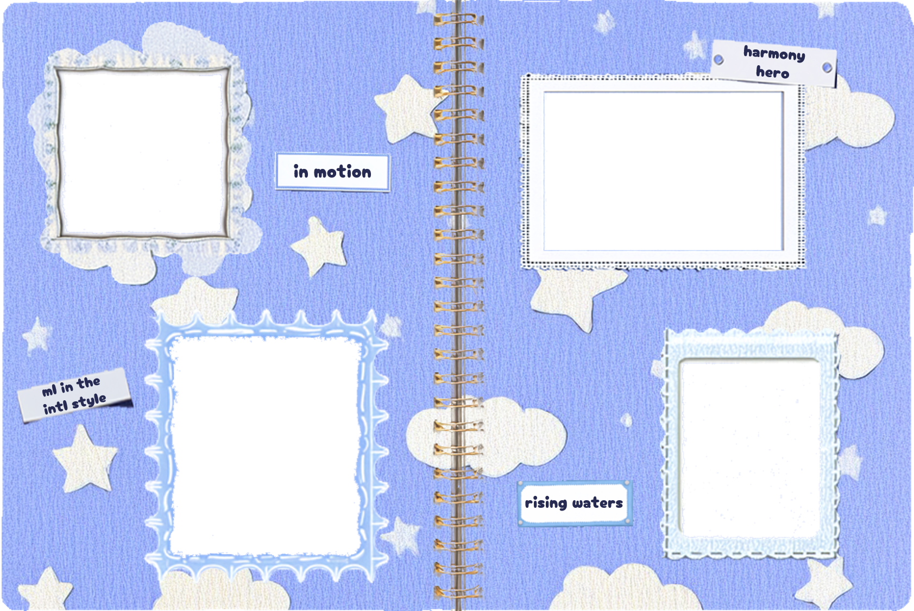
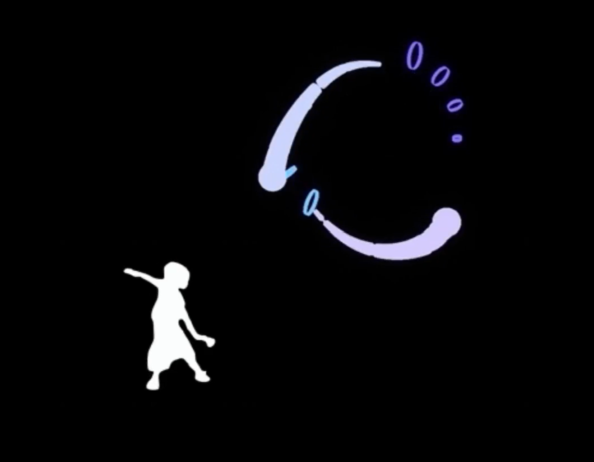
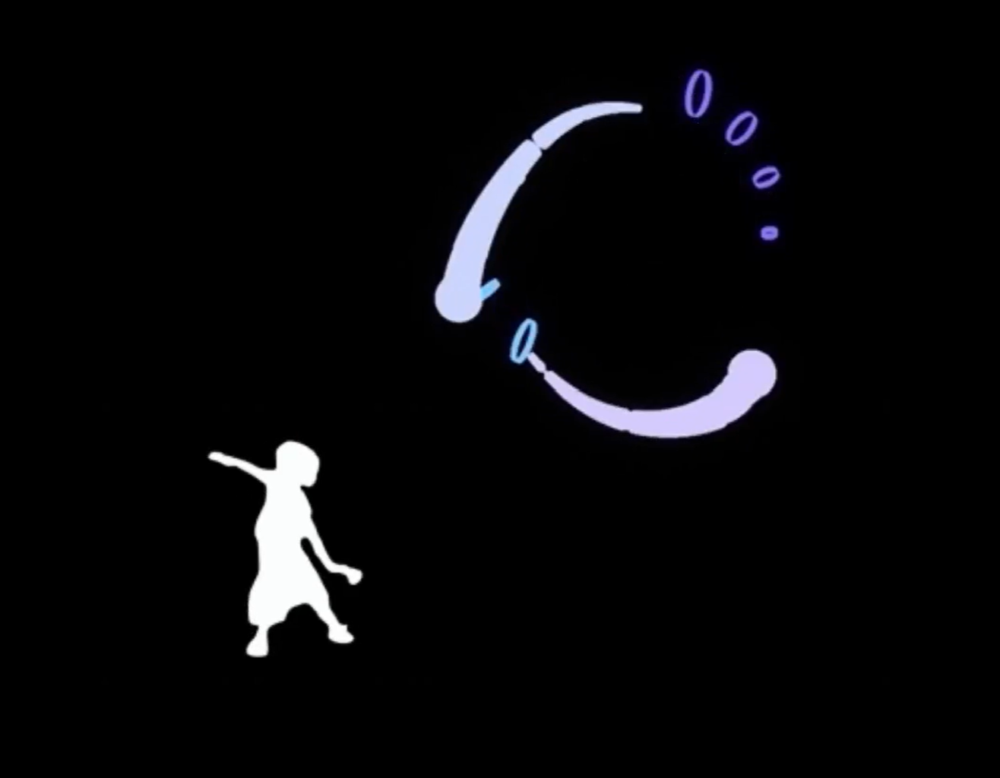
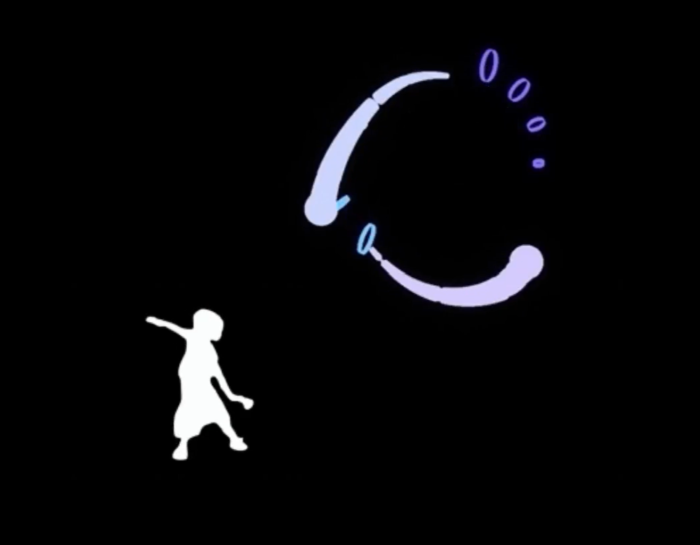
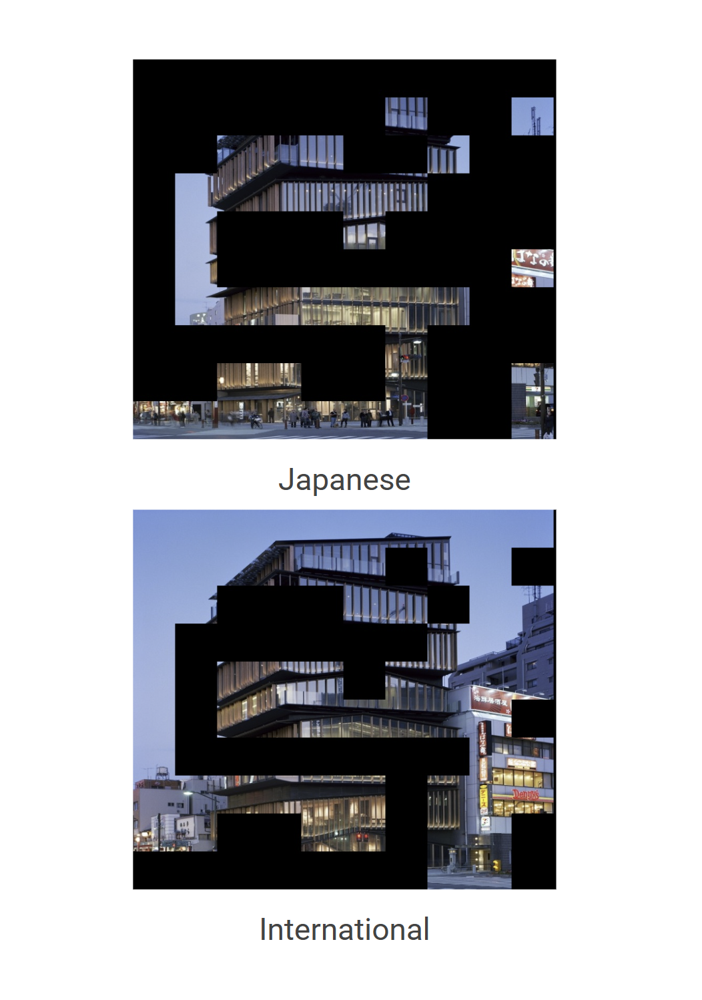
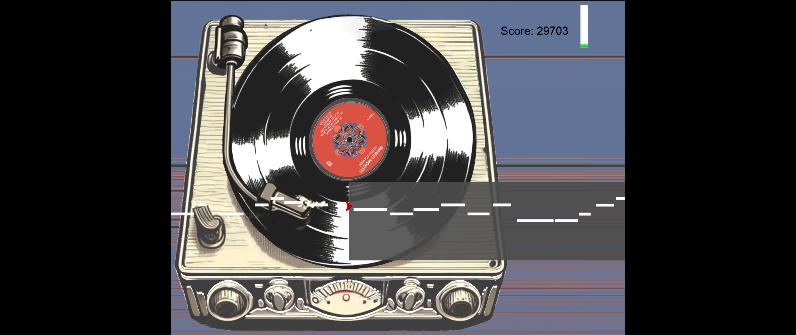

 


a video relating dance to music genre. coordinates of the dancer's motions were recorded using two different genres of music. the results were translated into the movement and color of the spheres and background with rhino/grasshopper

an exploration of the departure of traditional Korean, Indian, Chinese, Japanese, and European styles from their traditional forms toward a more international style. uses specially trained classifiers to assess these changes throughout the decades and to perform a detailed analysis of five modern buildings
a rhino/grasshopper visualization of the rising tides predicted due to climate changed. used rhino's version 8 beta to live bake the rising waters and python to change the texture to match real wave images

are you pitch perfect? harmony hero will help you figure it out. this singing game uses the python aubio library to detect a singer's pitch and visually display it on top of pitch bars corresponding to three famous songs